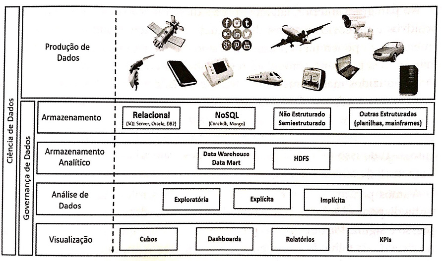
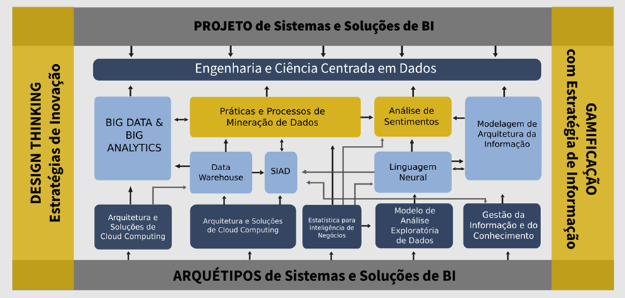
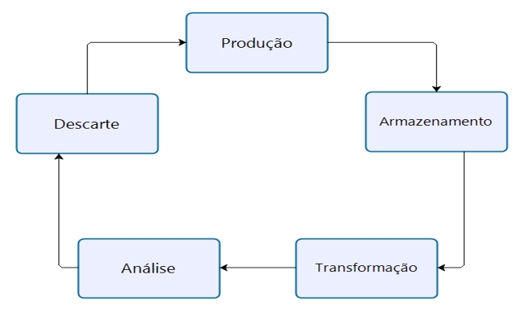

Em Direção à Modelagem e Arquitetura de Soluções Orientadas a Dados
by Eliomar Araújo de Lima
04/09/2018
O mundo cibernético está rompendo as barreiras operacionais dos agentes corporativos. Dados e mais dados são coletados, processados, armazenados, disseminados, acessados e retroalimentados cotidianamente. Objetos de dados são manipulados de modo convencional, vistos apenas como substratos de informação e conhecimento, ou de modo estratégico, como verdadeiros agregados preciosos que poderão subsidiar os agentes de tomada de decisão.
Segundo o relatório de avaliação da Confederação Nacional da Indústria (CNI) em 2015, o mundo corporativo no Brasil ainda carece de uma compreensão maior sobre as potencialidades e os benefícios que a economia digital pode oferecer. Os negócios e as atividades produtivas das empresas em geral produzem e consomem dados em larga escala, porém, pouco se faz em termos de análises sofisticadas sobre tais dados.
Já no setor público, políticas e ações vem sendo desenvolvidas com o propósito de tornar as informações abertas, transparentes e de acesso facilitado aos serviços públicos (e-Gov). Consequentemente, os órgãos da administração pública estão sendo cobrados a apresentarem suas próprias políticas e planos de dados abertos, pautados pela proteção de dados pessoais, gerando uma demanda por profissionais capacitados a desenvolverem atividades centradas em dados, informação e conhecimento. Nesse contexto, a tarefa de extração de informações úteis torna-se cada vez mais complexa, por envolver estruturas e culturas organizacionais em rede.
A falta de competências técnicas continua sendo um dos maiores entraves para o empreendimento de projetos envolvendo tecnologias orientadas a dados. Muitas empresas estão lutando com a complexidade do Big Data e do ecossistema de Ciência de dados sem o devido preparo, embora reconheçam a oportunidade de práticas emergentes. As abordagens orientadas a dados estão sendo requisitadas cada vez mais, fazendo com que as organizações necessitem de profissionais que possam dar sentido aos grandes conglomerados de fragmentos informacionais que coletam ao longo do tempo.
À guisa de ilustração, no setor produtivo goiano as empresas intensivas em conhecimento, como serviços, educação, indústria farmacêutica, saúde e agroindústria, além de suas respectivas cadeias de valor, vêm demandando profissionais junto às agências de emprego, cujas qualificações exigidas apontam para profissionais de dados, como engenheiros e cientistas de dados, analistas e pesquisadores de dados, além de outras funções correlatas.
Ao mesmo tempo em que produzem e consomem grandes quantidades de dados, as empresas em geral não conseguem gerar valor informacional. Com isso, elas deixam de capitalizar novos conhecimentos sobre o próprio negócio, os mercados onde atua os clientes e fornecedores, as atividades produtivas e organizativas. É certo que essa realidade se estende para o mercado como um todo de forma muito célere, devido ao grande número de aplicações de novas tecnologias emergentes e disruptivas, como mídias sociais, computação em nuvem, grandes volumes de dados e aplicativos móveis. As organizações precisam assimilar que o Big Data é uma mudança social, cultural, é uma nova fase da revolução industrial.
A informação enquanto ativo empresarial requer medidas de planejamento e gestão efetiva para colocar em uso a combinação certa de ferramentas de estratégia e tecnologias de informação, de gestão e educacionais. Isso resulta em maiores complexidades para o negócio e é uma preocupação crescente entre as empresas, em geral, e as organizações públicas, em particular. É justamente neste ponto que os conceitos cada vez mais populares de gestão inteligente de dados e inteligência de negócios surgem, exigindo uma estruturação adequada para os sistemas de apoio à decisão, incluindo novas tecnologias e corpo técnico qualificado.
Inúmeras são as questões que permeiam o mundo complexo das organizações em geral, especialmente com a abundância informacional e estruturas virtuais repletas de dados não estruturados, semi estruturados e estruturados, provenientes da Internet, das redes sociais, por meio de sensores e aplicações móveis, tornando cada vez mais difícil realizar análises descritivas e interpretativas das realidades físicas e virtuais.
Os agentes econômicos e de decisão precisam ter acesso à informação plural para adquirir o conhecimento necessário ao desenvolvimento de suas reflexões para a tomada de decisões. Por outro lado, é imprescindível ampliar os horizontes de avaliação, exigindo o tratamento de grandes massas de dados. Buscar métodos e ferramentas adequadas para lidar com as questões essenciais que envolvem as estratégias de estruturação de problema, adoção de procedimentos complexos sobre os dados para a obtenção de conhecimento e aprendizado organizacional, bem como, concepção e implementação de sistemas e soluções de Inteligência de Negócios (do inglês, Business Intelligence-BI).
Todos os desafios e oportunidades que se encerram neste prelúdio desencadeiam a formação de arranjos arquiteturas que compreendem requisitos de conhecimentos multidisciplinares, modelos de processamento analítico inteligente, aplicações baseadas em múltiplas abordagens tecnológicas e metodológicas. Outrossim, as necessidades emergentes da atual conjuntura econômica, social e tecnológica pressionam o mundo corporativo a ser responsivo, inovador, ágil e sustentável, implicando na busca incessante de aumento de desempenho e de melhorias de resultados por meio da predição de cenários, prospecção de novos negócios disruptivos, etc.
No aspecto instrumental, modelar soluções orientadas a dados requer uma arquitetura tecnológica que contemple o aprendizado em Data Warehouse, Data mining – incluindo mineração de dados e análise de sentimentos em sites web e redes sociais, linguagem R e Python, projetos de Big Data com Hadoop, uso de linguagem natural, dimensionamento do uso e contratação de cloud computing, desenho de arquiteturas de serviços de cloud computing, aprendizado de técnicas de Design Thinking e Gameficação, métodos estatísticos para Ciência de Dados, projetos envolvendo Machine Learning (aprendizado de máquina) e Deep Learning.
Panorama da Ciência de Dados

Figura 01. Visão panorâmica mais didática e em alto nível da ciência de dados e do ciclo de vida do dado. (Introdução à Ciência de Dados, 2016)
Além de propiciar instrumentos para a gestão e governança dos sistemas de apoio à decisão, ao ampliar os horizontes para estruturação de soluções e sistemas orientados a dados no âmbito das organizações em rede, um arranjo multidisciplinar e multidimensional emerge, conforme ilustrado na Figura 02.
Arranjo arquitetônico para Design de Soluções e Sistemas Orientados a Dados

Figura 02. Arranjo multidisciplinar e multidimensional para modelos de processamento analítico inteligente (O autor, 2018)
Visão descritiva dos Componentes do Arranjo Arquitetônico
Projeto de Sistemas e Soluções de BI
Os projetos e os processos de mudanças são os principais instrumentos para promoção do desenvolvimento organizacional. Gerenciar projeto é uma das disciplinas mais importantes para buscar empreendimentos exitosos. Para tanto, modelos de referência de melhores práticas (p. ex. PMBoK/PMI) vêm sendo adotados pelas empresas e organizações mundo a fora para propiciar as condições desejáveis à realização de projetos. Na área de desenvolvimento de sistemas e soluções de inteligência de negócios, o gerenciamento de projetos é ainda mais requisitado devido à complexidade inerente e às especificidades de cada projeto. Para tanto, é preciso conhecer os principais conceitos e abordagens de projetos, além de ferramentas de gerenciamento.
Engenharia e Ciência Centrada em Dados
Problemas mal ou pouco estruturados podem ser atacados por meio de abordagens multimetodológicas, partindo de uma ampliação dos horizontes de avaliação da unidade de análise. Cabe observar que parte das soluções, atualmente, é baseada em tecnologias inteligentes e abordagens orientadas a dados, cuja proliferação tecnológica abrange cada vez mais áreas sociais e organizacionais. Para atuar neste mundo da análise inteligente de dados, por meio da Engenharia e Ciência de Dados, é preciso explorar os principais conceitos e técnicas, aliados com estudos de casos reais, incluindo uma miríade (confluência) de áreas de conhecimento aplicado, a saber: modelos estatísticos, mineração de dados, Big Data e Data Warehouse, Gestão da Informação e do Conhecimento e Inteligência Artificial. Nesse sentido, o objetivo principal é propiciar um arcabouço de conhecimentos em Engenharia e Ciência de Dados.
Análise de Sentimentos
Gestores de marketing, empresas de relações públicas, gestores de campanha, políticos, e até mesmo investidores e compradores on-line são exemplos de beneficiários diretos da tecnologia de análise de sentimento. Existe um grande número de técnicas utilizadas para inferir sentimentos, que variam desde escala psicométricas adaptadas para modelos computacionais, dicionários léxicos até mesmo técnicas de aprendizado e processamento de linguagem natural. Logo, a análise de sentimentos visa prover um entendimento dessas técnicas e avaliar como elas têm sido aplicadas em cenários contemporâneos.
Processamento de Linguagem Natural
Como uma das subáreas da Inteligência Artificial (IA), o Processamento de Linguagem Natural (PLN) é uma das técnicas importantes na Ciência de Dados que possibilita o desenvolvimento de tecnologias de assistência virtual (p. ex. Chatbox) e outras aplicações voltadas à criação de geradores e processadores de textos. Os textos interpretados ou gerados por sistemas desenvolvidos por meio de PLN são iguais ou similares aos textos de idiomas falados por seres humanos.
Modelagem de Arquitetura da Informação
O ser humano quando é bombardeado com muita novidade acaba tendo um baixo grau de assimilação, devido à racionalidade (humana) limitada e, por outro lado, quando lida com fenômenos já conhecidos (em função da rotina) acaba tendo um desinteresse em assimilá-los, gerando desinformação. Por isso, a importância do balanceamento entre os dois pólos. É com esse espírito que a Modelagem de Arquitetura da Informação se justifica.
Arquiteturas de Big Data e Big Analytics
Inúmeras são as questões que permeiam o mundo complexo da cibernética, com abundância informacional e estruturas virtuais repletas de dados não estruturados, semi estruturados e estruturados, seja na Internet, nas redes sociais, por meio de sensores e aplicações móveis, fica cada vez mais difícil realizar análises descritivas e interpretativas da realidade. Os agentes econômicos e usuários em geral precisam ter acesso à informação plural para adquirir o conhecimento necessário ao desenvolvimento de suas reflexões para a tomada de decisões. Para isso é imprescindível ampliar os horizontes de avaliação, exigindo o tratamento de grandes aglomerados de dados. Discutir os aspectos essenciais que envolvem as operações com procedimentos complexos sobre os dados é o ponto de partida para a estruturação de soluções de Big Data Analytics.
Arquitetura e Soluções de Cloud Computing
Um dos pilares da 4ª Revolução está assentado na Computação em Nuvem (Cloud Computing). Um dos dilemas dos líderes e gestores corporativos e de TI é quanto à definição do modelo de hosting, colocation e outsourcing que melhor se adeque à arquitetura de serviços de negócio, serviços de aplicação e dados e serviços de infraestrutura. Nesse sentido, Cloud Computing se apresenta como uma opção robusta, escalável, interoperável, com alta disponibilidade (com recuperação de desastres), segura e resiliente. Assim sendo, em projetos de sistemas e soluções de BI, uma etapa importante é a modelagem da arquitetura de cloud computing.
Modelo de Análise Exploratória de Dados
Diferentemente do que é feito nos modelos estatísticos, sejam eles Clássicos ou Bayesianos, na Análise Exploratória de Dados (AED) não há a imposição de um modelo aos dados, mas sim uma atividade de mineração nos dados que pode, eventualmente, indicar qual o melhor modelo. O modelo de AED vai além do uso descritivo da estatística, procura olhar de forma mais profunda os dados, sem resumir muito a quantidade de informações. A finalidade, portanto, é examinar os dados previamente à aplicação de qualquer técnica estatística. Desta forma o analista consegue um entendimento básico de seus dados e das relações existentes entre as variáveis analisadas.
Gestão da Informação e do Conhecimento
Em meio aos grandes aglomerados de dados disponíveis no âmbito organizacional, muitos são os desafios para se buscar a estruturação de informações e a consequente criação de conhecimentos passíveis de serem sistematizados e servirem de substratos para a ação. Portanto, não é uma jornada trivial partir dos dados brutos e obter ao final do ciclo de transformações sucessivas aprendizado, insights e inovações. É neste contexto em que a Gestão da Informação e do Conhecimento se justifica, em face de necessidade de uso das unidades informacionais para tomada de decisões, implicando a geração de conhecimentos organizacionais.
Modelagem e Arquitetura de Data Warehouse
Um dos grandes desafios do mundo corporativo nesta era da informação é manter seus depósitos de dados digitais, que servem para armazenar informações detalhadas relativamente à sua operação, criando e organizando relatórios e consultas por meio de históricos que são depois usados pela própria empresa para ajudar a tomar decisões importantes com base nos fatos revelados. Assim, a Modelagem e Arquitetura de Data Warehouse propicia o conhecimento técnico para consecução de projetos de BI, com ênfase na armazenagem, organização e estruturas de acesso aos dados.
Sistemas Inteligentes de Apoio à Decisão
Os Sistemas inteligentes de apoio à decisão (SIAD) estão sendo aplicados de forma exitosa nas mais diversas áreas de negócio, incluindo previsões, otimizações, análise de risco, controle, inferência, modelagem e detecção de fraude. As soluções baseadas nesses sistemas subsidiam os gestores, agentes de decisão e decisores em aplicações complexas e extensas, consideradas difíceis e muito restritivas. Portanto, o objetivo é definir e aplicar as principais técnicas empregadas para construção de SAD e SIAD.
Aspectos Comportamentais da Decisão
Um dos fatores menos evidentes, que torna difícil a decisão nas ações humanas, é a complexidade do mundo moderno. Os problemas de decisão são considerados complexos quando compreendem vários elementos ou aspectos distintos, cujas múltiplas formas possuem relações de interdependências, dificultando sua clareza e entendimento. Nesse sentido, ao abordar os aspectos comportamentais da decisão, pretende-se abordar métodos e abordagens de análise de decisão pautadas pelos aspectos comportamentais.
Gameficação como Estratégia de Inovação
Buscar uma estratégia de inovação em uma empresa exige a mobilização de muitos esforços e recursos. Mobilizar e engajar as pessoas em prol de um novo empreendimento é um dos fatores críticos de sucesso para implementar uma boa estratégia de inovação. Viabilizar as interações entre pessoas, equipes do projeto e entre empresas, com base no oferecimento de incentivos que estimulem o engajamento das partes envolvidas e afetadas, de maneira lúdica, é o que caracteriza a gameficação.
Design Thinking: Estratégias de Inovação
O designer sabe que para identificar os reais problemas e solucioná-los de maneira mais efetiva, é preciso abordá-los sob diversas perspectivas e ângulos. Assim, prioriza o trabalho colaborativo entre equipes multidisciplinares, que trazem olhares diversificados e oferecem interpretações variadas sobre a questão e, assim, soluções inovadoras. Porquanto, é preciso promover a aplicação de metodologias inovadoras de design em projetos de produtos e de serviços. Além disso, espera-se proporcionar o desenvolvimento das habilidades e competências do pensamento sistêmico nos profissionais que se relacionam diretamente com empresas, buscando a inovação em projetos de tecnologias.
Práticas e Processos de Data Mining
A área de Data Mining (ou Mineração de Dados) teve início nos anos de 1990 como uma importante subárea de estudo em bancos de dados. O objetivo é a extração de padrões e conhecimento úteis e interessantes que se encontram “escondida” em grandes volumes de dados. Data Mining tem integrado (com sucesso) técnicas das áreas de bancos de dados, estatística e inteligência artificial. Para melhor compreendê-la, busca-se a definição da arquitetura, das principais práticas e do delineamento de processos de mineração de dados no contexto da inteligência de negócios, metodologias para preparação dos dados, interpretação de seus resultados e assimilação dos conhecimentos obtidos de forma automática. As organizações, em geral, requisitam soluções de mineração de dados para: detectar fraudes, minimizar riscos, antecipar demanda de recursos, aumentar a taxa de resposta de campanhas de marketing, minimizar atritos com clientes e avaliação de desempenho organizacional.
Estatística para Inteligência de Negócios
Os modelos estatísticos descritivos e inferenciais subsidiam a Ciência de Dados, que se definem em processos, modelos e tecnologias que estudam os dados durante todo seu ciclo de vida desde a produção até ao descarte conforme a figura 02 abaixo, capacitando os pesquisadores para extrair conhecimento e obter melhores resultados de grandes projetos. Tornam propícias as estratégias de análise aplicada em dados não convencionais: grandes volumes, variedades e heterogeneidade. A estatística é usada para a exploração dos dados por meio da descrição de várias técnicas de análise de dispersão e de medida central (média, mediana, moda e faixa de valores) combinadas com gráficos (Histogramas, Frequência, Barra, BoxPlot, Dispersão). O surgimento da mineração de dados é fundamento na estatística, ou seja, dentre outros pilares, o estudo numérico de dados relacionados subjaz a mineração de dados.

Figura 02. Ciclo de Vida do Dado. (O autor, 2018)
Arquétipos de Sistemas e Soluções de BI
Na modernidade, o desenvolvimento organizacional depende fundamentalmente dos sistemas de informação. Estes, por sua vez, estão imbricados em cenários complexos, especialmente porque envolvem domínios de atividade humana e porque sofrem com a emergência dos pressupostos da imprevisibilidade, da instabilidade e da incerteza. Com os sistemas de inteligência de negócio não é diferente, deve-se apresentar os arquétipos que orientam o desenvolvimento de sistemas de informação, em geral, e sistemas de BI, em particular, e servir de parâmetro de avaliação para a condução de projetos.
Como deve ser referenciado:
Lima, E. A. (2018). Em direção à Modelagem e Arquitetura de Soluções Orientadas a Dados. Artigo de divulgação, Instituto de Informática, Universidade Federal de Goiás.